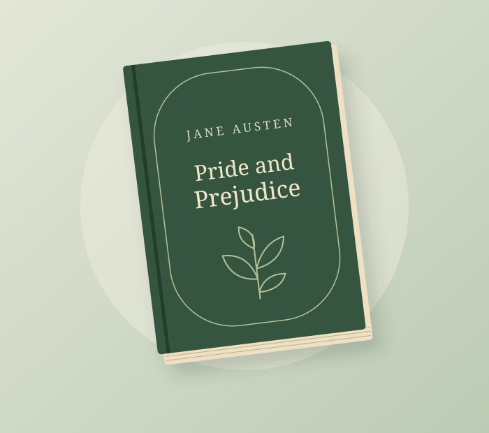

Music
Albums, artists, and songs worth hearing.
Three ways to get lost in something good.
Albums, artists, and songs worth hearing.
Films, recent releases, and memorable stories.
Novels, nonfiction, and page-turners.
One favorite. A few thoughts. A reason to turn the first page.

On the bookshelf · October 2026
The best part of this novel is how much happens between the lines. A conversation, a first impression, or a small change of mind can reshape an entire relationship.
Elizabeth Bennet's wit keeps the story lively, while the slow unraveling of her assumptions gives it heart. The formal language takes a little settling into, but the humor and awkward social moments still feel familiar.
Pick it up if you enjoy sharp dialogue, complicated characters, and a romance that asks its characters to grow.
Read the book at Project GutenbergNext on the list: an album for a quiet evening, a film worth revisiting, and a book to take into the weekend.
Suggest the next pickGood reviews start with curiosity. I focus on what a story makes us notice, how an album sets a mood, and who might enjoy it most.
Read moreMake room for one more favorite
Have a book, movie, or album I should explore? Send the title and what you love about it.
Submit a recommendationOpens your email app · y-z@outlook.com